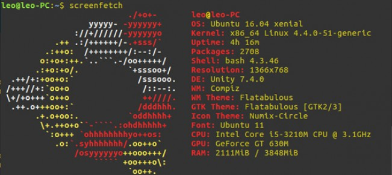
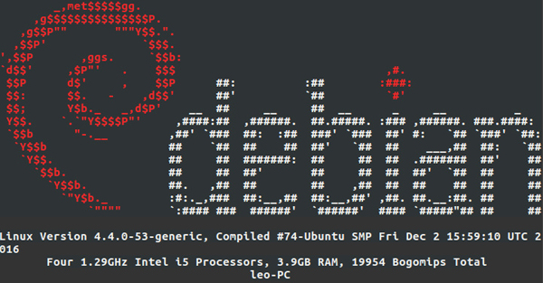
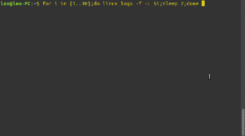
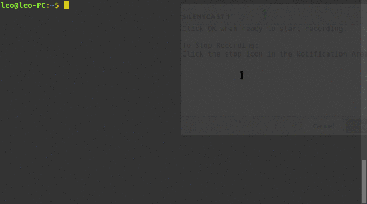
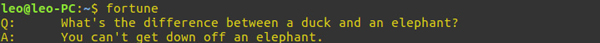
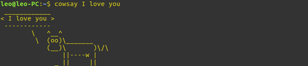
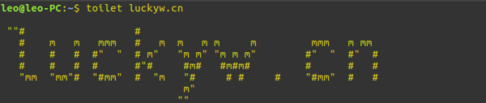
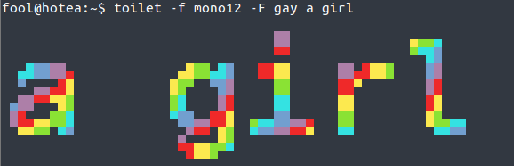
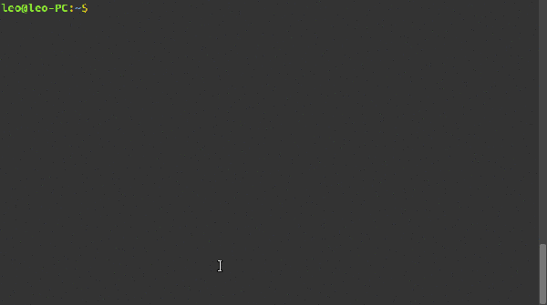
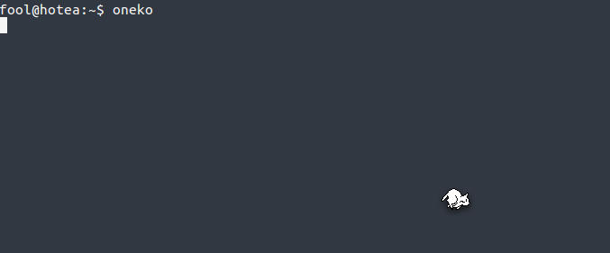

Linux中有趣的命令
本篇文章转自CSDN，作者为冒险岛_0_
原文链接：https://blog.csdn.net/qq_41741971/article/details/82053290
1.screenfetch:显示系统、主题信息
安装使用:
sudo apt install screenfetch
screenfetch
效果图:

2.linux_logo:linux版本logo图片及系统信息
安装使用:
sudo apt install linuxlogo
linux_logo
效果图:

查看内置的logo列表:
linux_logo -f -L list
Available Built-in Logos:
Num Type Ascii Name Description
1 Classic Yes aix AIX Logo
2 Classic Yes bsd FreeBSD Logo
3 Banner Yes bsd_banner FreeBSD Logo
4 Classic Yes irix Irix Logo
5 Classic Yes openbsd OpenBSD Logo
6 Banner Yes openbsd_banner OpenBSD Logo
7 Banner Yes solaris The Default Banner Logos
8 Banner Yes banner-simp Simplified Banner Logo
9 Banner Yes banner The Default Banner Logo
10 Classic Yes classic-nodots The Classic Logo, No Periods
11 Classic Yes classic-simp Classic No Dots Or Letters
12 Classic Yes classic The Default Classic Logo
13 Classic Yes core Core Linux Logo
14 Banner Yes debian_banner_2 Debian Banner 2
15 Banner Yes debian_banner Debian Banner (white)
16 Classic Yes debian_old Debian Old Penguin Logos
17 Classic Yes debian Debian Swirl Logos
18 Classic Yes gnu_linux Classic GNU/Linux
19 Banner Yes mandrake_banner Mandrake(TM) Linux Banner
20 Banner Yes mandrake Mandrakelinux(TM) Banner
21 Banner Yes mandriva Mandriva(TM) Linux Banner
22 Banner Yes pld PLD Linux banner
23 Classic Yes raspi An ASCII Raspberry Pi logo
24 Banner Yes redhat RedHat Banner (white)
25 Banner Yes slackware Slackware Logo
26 Banner Yes sme SME Server Banner Logo
27 Banner Yes sourcemage_ban Source Mage GNU/Linux banner
28 Banner Yes sourcemage Source Mage GNU/Linux large
29 Banner Yes suse SUSE Logo
30 Banner Yes ubuntu Ubuntu Logo
Do “linux_logo -L num” where num is from above to get the appropriate logo.
Remember to also use -a to get ascii version.
接下来我们开始利用命令在终端循环打印logo:
for i in {1..30};do linux_logo -f -L $i;sleep 2;done
效果图如下:

3.sl:蒸汽火车
安装使用:
sudo apt install sl
sl
ls命令用于查看文件夹的内容，而ls如果反着写的话，sl就会输出一台嘟嘟嘟的火车，如下图所示:

注:当敲入LS时，此命令也会运行
fortune:幽默
安装使用:
sudo apt install fortune
fortune
效果图:

当然这都是英文的，如果需要它输出中国的唐诗三百首，则:
sudo apt install fortune-zh
fortune-zh
效果图:

注:此时再敲入fortune回车，输出的内容包括中、英文
4.cowsay:会说话的小牛
安装使用:
sudo apt install cowsay
cowsay
效果图:
接下来结合fortune和cowsay让小牛说唐诗:
注:|是管道命令符，将一个命令的输出作为下一个命令的输入，经常用在脚本和程序编写中
和此命令类似的还有xcowsay以及cowthink，在此不作详细说明了
5.toilet
安装使用:
sudo apt install toilet
toilet
效果图:

toilet还可以添加颜色，里面的选项请自己man一下
$ toilet -f mono12 -F gay a girl

6.cmatrix:黑客帝国
安装使用:
sudo apt install cmatrix
cmatrix
效果图:

7.aafire:火焰
安装使用:
sudo apt install aafire
aafire
效果图:
- oneko 命令
桌面上出现一直喵星人，跟着你的鼠标跑，你不动了它就睡觉。哈哈，这个挺不错
安装 $sudo apt-get install oneko

运行 $oneko 要关掉这家伙，按ctrl+c 结束
- xeyes 命令
在屏幕上出现一双眼睛，盯着你的鼠标指针
安装运行同上